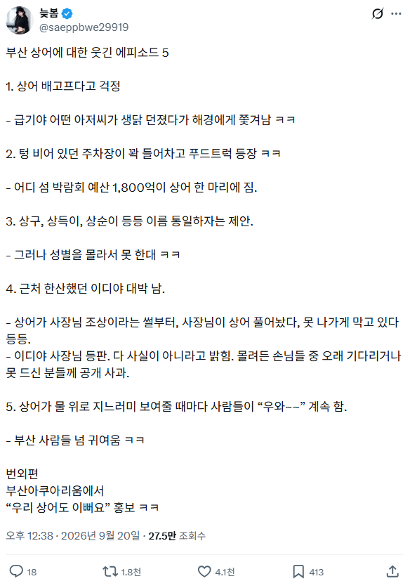

곰탱이 늑대 상어 ㅋㅋㅋㅋ 진짜 다들 동물을 좋아하는구나
저거랑 누가 얼룩말 동네골목에서 찍은사진이 앨범커버처럼 나온것도 웃음벨임 ㅋㅋ
저 강같은데에 상어가 있는거임?
바로근처가 수심8미터이상 나오는 바다임
대형 크루즈선이 떡하니 떠있는데 강임?
상어가 롯데 승요인거 보니 마스코트도 바꿔야겠더라
지면 상어밥될까봐
여수가 힌트를 얻을 것 같다는 느낌이 든다.
철조망 치고 상어 가두리로 키우죠?
부산갈메기들 시무룩 하겠네
이디야 사장님 조상님인지 아닌지 자기가 어떻게 알아 ㅋㅋㅋㅋㅋㅋ
이렇게 보니까 크루즈 졸라크네..
저기서 피흘리면서 바다안에 들어가있음 바로 허벅다리 한입하겠지?
자연상태 상어는 못참지 ㅋㅋ